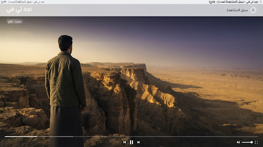
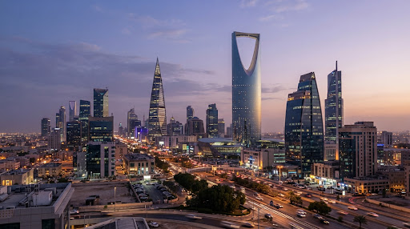
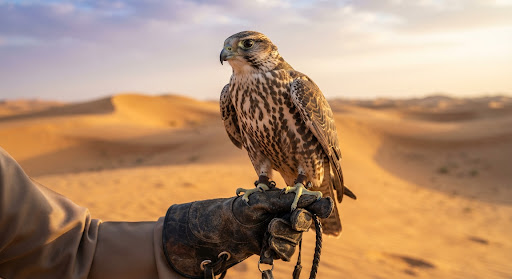

 م1 · ح3 أصداء طويق الموسم 1 · الحلقة 3 close schedule متبقي 18 دقيقة play_arrow متابعة المشاهدة
 م1 · ح1 سراب المدينة الموسم 1 · الحلقة 1 close check_circle مكتمل المشاهدة replay إعادة المشاهدة
 وثائقي صقر الجزيرة وثائقي تاريخي close schedule متبقي 10 دقائق play_arrow متابعة المشاهدة